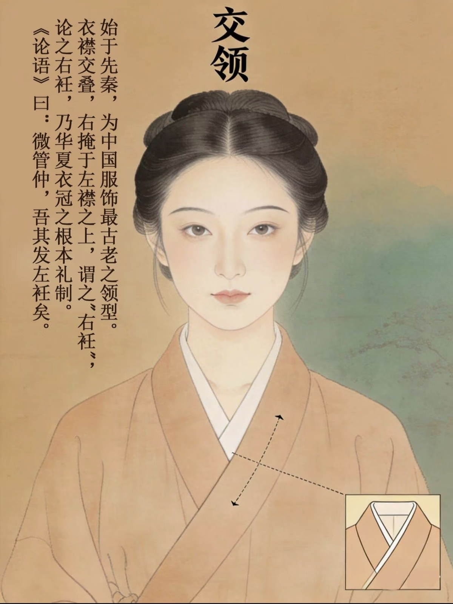
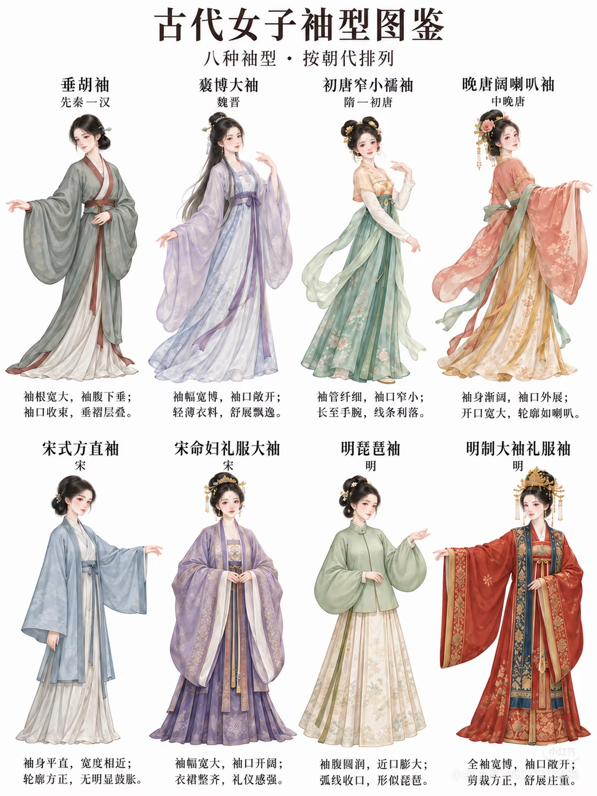
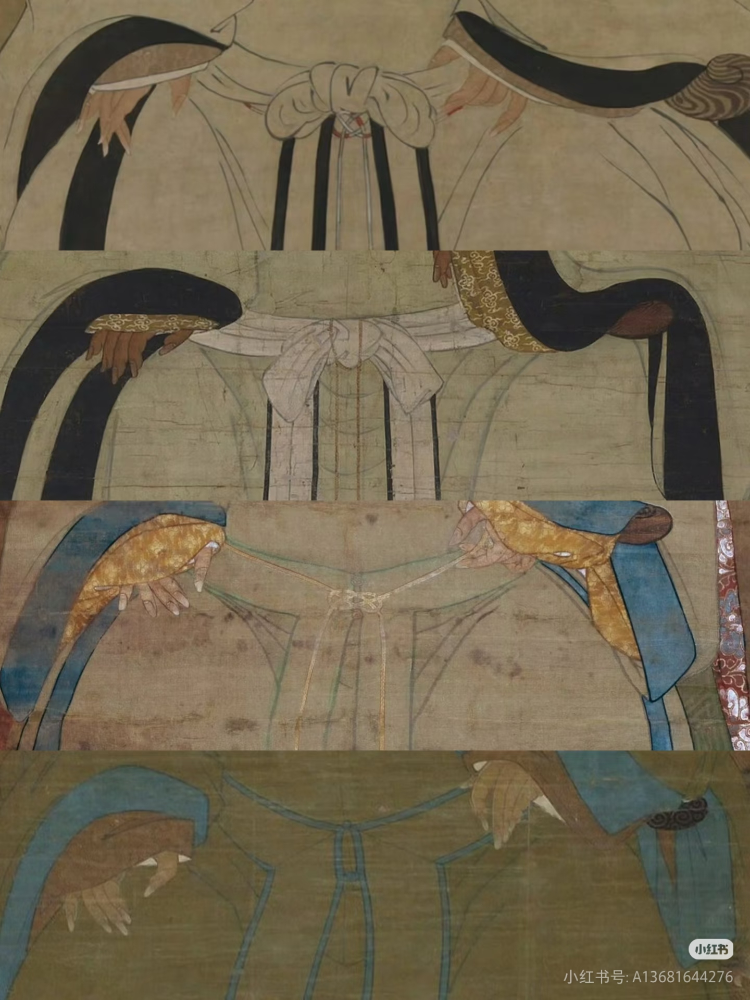

朝代更迭，衣袂飘飘，每一件衣裳都是历史的注脚
曲裾深衣盛行，衣襟绕襟而下，交领右衽，宽袍大袖，尽显大汉气象。
襦裙鼎盛，胡风融合。齐胸衫裙、坦领半臂，色彩浓烈，展现盛唐的包容与自信。
受理学影响，服饰趋于拘谨保守。褙子流行，色彩淡雅，讲究“三分留白七分韵”。
“上承周汉，下取唐宋”。马面裙、曳撒、披风大放异彩，端庄大气，等级森严。
交领右衽，系带隐扣，汉服的骨骼与灵魂

左侧衣襟掩住右侧衣襟，外观呈“y”字形，这是汉服最核心的特征。

袖型多样，有琵琶袖、广袖、箭袖等，举手投足间尽显飘逸。

汉服多使用绳带系结，极少使用纽扣，衣带飘飘，含蓄内敛。
远山如黛，近水含烟，中国人的浪漫都在颜色里
#9E2B25
女子妆容与裙衫之色
#264E66
远山如黛，沉稳内敛
#F3DAA9
浅黄色，如桑叶初生
#789262
竹林之绿，文人雅士所爱
#4C8DAE
青花瓷之蓝，深邃高贵
#FF461F
印章之色，辟邪且庄重
#D6ECF0
月光洒落，极淡的蓝白
#622A1D
黑中扬赤，汉代最高礼服色
#CCA4E3
丁香花紫，温婉柔美
#FFB61E
画师常用的明艳之黄
#DC7A70
饮酒微醺时脸颊的红晕
#E6D3B3
黄绿相融，果实成熟的颜色
服章之美，离不开点缀之华。君子无故，玉不去身。
古人云“身体发肤，受之父母”，束发佩簪是成年的标志。步摇随行步而摇曳，尽显东方古典美。
“君子无故，玉不去身”。佩玉行走时发出的清脆声音，用于节制步伐，要求人走路端庄稳重。
不仅是服饰上的精致挂件，更内藏香草。古代青年男女常以香囊为定情信物，含情脉脉。
云想衣裳花想容，诗词里的东方衣裳之美
头上倭堕髻，耳中明月珠。
缃绮为下裙，紫绮为上襦。
描绘了汉代采桑女罗敷的经典穿搭，展示了汉代经典的“上衣下裙”（襦裙）形制与华丽的配色。
云想衣裳花想容，
春风拂槛露华浓。
以云霞比衣服，以花比容貌，极写唐代贵妃的服饰与容颜之美，尽显盛唐的雍容华贵。
风吹仙袂飘飘举，
犹似霓裳羽衣舞。
“袂”即衣袖。诗句生动地展现了唐代宽袍大袖的飘逸之美，仿佛让人看到了盛唐的霓裳羽衣。
三月三日天气新，
长安水边多丽人。
描绘了唐代上巳节，长安女子身着华服春游的盛景，展现了唐代女子服饰的开放与明艳。
蛾儿雪柳黄金缕，
笑语盈盈暗香去。
“蛾儿、雪柳”均为宋代女子元宵节佩戴的应景头饰。体现了宋代服饰清雅内敛、注重配饰的特点。
岂曰无衣？与子同袍。
王于兴师，修我戈矛。
“袍”是古代一种长衣。这首诗展现了先秦将士同穿战袍、同仇敌忾的豪情，也是“同袍”一词的由来。
测一测你的“汉服浓度”
锦、绣、染、缂，穿在身上的非物质文化遗产
寸锦寸金，逐花异色，皇家御用。
以针为笔，以丝为墨，绣画合一。
冰纹独特，青出于蓝而胜于蓝。
通经断纬，雕刻时光的织中之圣。
有服章之美谓之华，有礼仪之大故称夏
左手在外，右手在内，抱拳前推。男子尚左，所以左掌包右拳，表示以柔克刚、阳中有阴。这是古代最常用的相见礼。
双手交叠放在腹部偏右处，微蹲低头，口称“万福”。身姿优美，尽显女子的温婉端庄，是古代女子最常用的行礼方式。
两膝着地，臀部坐在脚后跟上，腰背挺直，这叫“正坐”。在正式场合或拜见尊长时，行稽首、顿首等大礼，是最高规格的敬意。
图必有意，意必吉祥，衣襟上的千年图腾
云纹是古人对于天象的敬畏与向往。形态连绵不断，寓意“渊源共生，和谐共融”，常出现在领口与袖缘。
以藤蔓、卷草为骨架，花大叶小。因为藤蔓连绵不断，被称为“万寿藤”，寓意生生不息、吉庆连绵。
日、月、星辰、山、龙等十二种图案。这是古代帝王及高级官员礼服上专有的章纹，是等级与皇权礼制的最高象征。